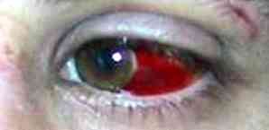
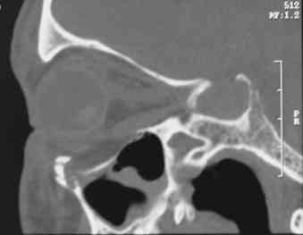

Fractures : plancher de l'orbite
AdulteSpécialité : ophtalmologie / traumatologie /
Points importants
Eliminer plaie oculaire : toujours ouvrir les paupières
- Rechercher une urgence vitale (dans le cadre d'un polytraumatisme)
- Association fréquente avec fracture zygomatique
- Reconnaître une incarcération musculaire vraie
Anatomie orbitaire
 _512
Anatomie orbitaire
_512
Anatomie orbitaire
_513 Anatomie orbitaire
_514 Anatomie orbitaire
- Plancher et paroi interne sont des os papyracés
- Fracture isolée du plancher et/ou de la paroi interne (sans lésion du cadre orbitaire) = blow-out fracture
-
Le nerf sous-orbitaire (V2) chemine dans un canal osseux constitué par un dédoublement du plancher :
- fragile, souvent touché
- quasiment jamais rompu
- Plancher orbitaire = toit du sinus maxillaire => fracture du plancher = hémosinus maxillaire
Présentation clinique / CIMU
SIGNES FONCTIONNELS
Fracture du plancher orbitaire
- Limitation de l'élévation du regard en cas de fracture du plancher orbitaire et diplopie dans le regard vers le haut : le muscle droit inférieur au contact de la fracture ne peut se détendre complètement (contusion) et empêche donc l'élévation normale du globe oculaire
 _515
Limitation de l'élévation du regard
_515
Limitation de l'élévation du regard
Fracture de la paroi interne orbitaire
- Limitation de l'abduction de l'oeil du côté atteint. Même mécanisme que précédemment au niveau du muscle droit interne
CONTEXTE
Terrain
- Homme jeune dans 2/3 des cas
Circonstances de survenue
- Rixe ++
- Accident sportif
- Chute
- Mécanisme : choc sur le globe qui répercute la pression sur les parois osseuses => fracture des plus fragiles
_516 Choc sur le globe
EXAMEN CLINIQUE
Inspection
- Epistaxis tari (drainage de l'hémosinus par les voies nasales)
- Emphysème sous-cutané palpébral (parfois impressionnant) par mouchage : passage de l'air sous pression des fosses nasales dans l'orbite par la brèche osseuse du plancher orbitaire
- Oedème ± ecchymose palpébrale masquant l'énophtalmie par agrandissement du volume orbitaire secondaire à la rupture de ses limites osseuses
- Hémorragie sous-conjonctivale
 _517
Palpation
- Pas de douleur au niveau du cadre orbitaire si blow-out isolé
- Si fracture du plancher orbitaire. : hypo ou anesthésie dans le territoire cutané du nerf infraorbitaire (aile du nez, joue, hémi-lèvre supérieure, gencive et dents du groupe incisivo-canin homolatéral)
 _518
Territoire cutané du nerf infraorbitaire
_518
Territoire cutané du nerf infraorbitaire
- Aucune anomalie sensitive si fracture isolée de la paroi interne de l'orbite
Cas particulier : incarcération du muscle droit inférieur
- Très rare en réalité (confondue avec interposition graisseuse dans le site fracturaire sans gravité)
-
Le diagnostic est clinique :
- impossibilité totale et douloureuse d'élever le globe oculaire
- les autres signes (cf. supra) sont en général présents
- mécanisme dit en « trap-door » : le fragment osseux est revenu en place après avoir pincé le muscle droit inférieur
CIMU
- Tri 3
Signes paracliniques
IMAGERIE
Scanner du massif facial
- Indispensable si signes cliniques de fracture du plancher orbitaire ou de la paroi interne
- Retrouve la ou les fractures
- Elimine d'autres lésions osseuses associées
- Hémosinus maxillaire si fracture du plancher orbitaire
- Comblement des cellules ethmoïdales si fracture de la paroi interne
-
En cas d'incarcération du muscle droit inférieur :
- TDM en urgence car urgence à traiter chirurgicalement dans les 6h (risque de lésion irréversible ischémique musculaire)
_519
 _520
_520
_521
_522
_523
 _524
_524
 _525
_526
Traitement
TRAITEMENT EXTRAHOSPITALIER / INTRAHOSPITALIER
Stabilisation initiale
- Urgence relative, rechercher d'autres lésions associées (notamment pour les AVP) pour éliminer une urgence vitale ou fonctionnelle
- Contrôle clinique de l'acuité visuelle (écarter délicatement les paupières même en cas d'oedème important) et examen ophtalmologique en urgence au moindre doute
- A jeun
- Contre-indication du mouchage
MEDICAMENTS
- Antalgiques IV si indication chirurgicale sinon per os
- Contrôle VAT et antibiothérapie (Augmentin 1 g x 3/j) si plaie
Surveillance
CLINIQUE
- Douleur
- Acuité visuelle
- Survenue exophtalmie = hématome intra-orbitaire (en général secondairement associée avec une baisse de l'acuité visuelle) => transfert en urgence en Chirurgie maxillo-faciale
Devenir / orientation
CRITERES D'ADMISSION
En préhospitalier
- Transfert aux urgences de chirurgie maxillo-faciale si traumatisme isolé
- Transfert en réanimation si polytraumatisé
En intra hospitalier
- Lésion associée nécessitant une hospitalisation
En cas d'incarcération du muscle droit inférieur
- Transfert en urgence en Chirurgie Maxillo-faciale pour désincarcération
CRITERES DE SORTIE DU SAU
- Si fracture isolée
ORDONNANCE DE SORTIE
- Irrigation des fosses nasales x 6 / j au sérum physiologique pendant 7 jours
- Pas de mouchage
- Antalgiques : Efferalgan codéiné 2 cp x 3/j
-
Soins locaux si plaie associée :
- sérum physiologique
- vaseline
- compresses stériles
- poursuite antibiothérapie Augmentin 1 g x 3/j pendant 5 jours
- ablation des fils à J+5
- Bilan radiologique réalisé ou prescrit
RECOMMANDATIONS DE SORTIE
- Pas de mouchage 8 semaines
- Consultation en chirurgie maxillo-faciale dans les 3 jours suivant le traumatisme, (à jeun depuis 6h lors de la consultation)
- Arrêt de travail jusqu'à la consultation de chirurgie maxillo-faciale
- Pas de sport pendant 2 mois
- Protection solaire (écran total) si cicatrice pendant 1 an
Algorithme
- Algorithme : fracture du plancher orbitaire
 _699
Algorithme
Algorithme : fracture du plancher orbitaire
_699
Algorithme
Algorithme : fracture du plancher orbitaire
Bibliographie
- Barbrel P et Géré E. Fractures de l'orbite. Encycl Méd Chir (Editions Scientifiques et Médicales Elsevier SAS, Paris, tous droits réservés), Stomatologie, 22-072-A-10, 2001, 20 p
- Duhamel P, Giraud O, Denhez F et Cantaloube D. Examen d'un traumatisé facial. Encycl Méd Chir (Editions Scientifiques et Médicales Elsevier SAS, Paris), Stomatologie, 22-068-A-05, 2002, 24 p
Auteur(s) : Arnaud RIGOLET